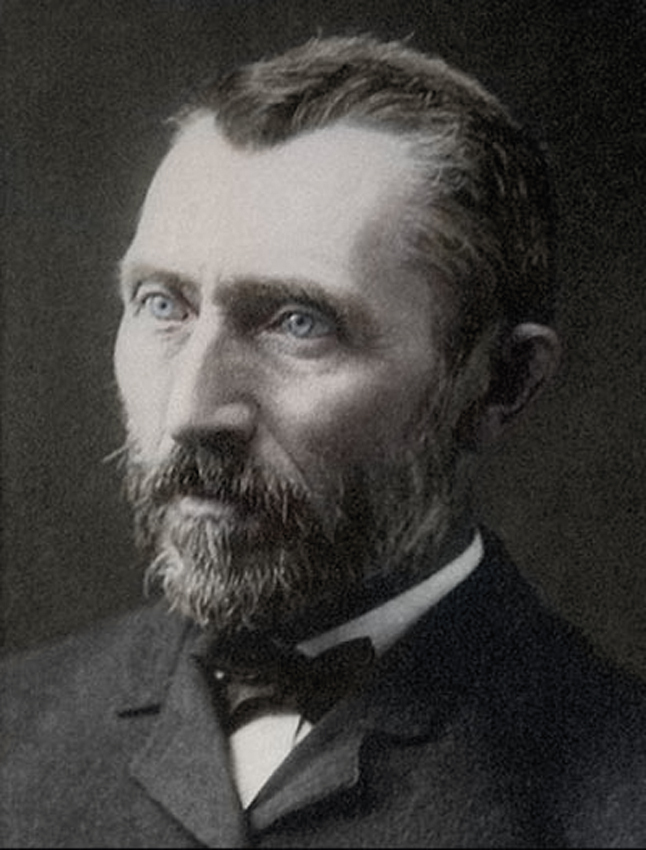

Biografía

Vincent van Gogh nació en 1853 en los Países Bajos. Considerado uno de los más grandes pintores de todos los tiempos, su vida estuvo marcada por luchas internas, pobreza y enfermedad mental.
Se dedicó al arte a los 27 años, influenciado por el impresionismo y el arte japonés. Sus obras reflejan emociones intensas y el uso de colores vibrantes, pinceladas gruesas y movimientos turbulentos.
Vivió sus últimos años en Francia, donde pintó más de 2,000 obras, incluyendo sus famosas series de girasoles y paisajes nocturnos. Falleció en 1890 a los 37 años.
Obras Famosas
Galería de Imágenes